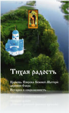
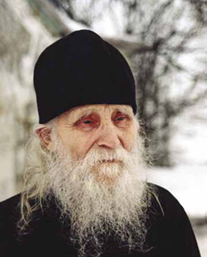

{kind=link}
{kind=link}

Протоиерей Николай Гурьянов родился 24 мая 1909 года в селе Чудские Заходы Гдовского уезда Санкт-Петербургской епархии. Отец — Алексей Иванович — происходил из купеческого сословия, был регентом церковного хора, отличался крутым характером. Умер он в 1914 году. Похоронен на кладбище около церкви Архангела Михаила д. Кобылье Городище. Мать — Екатерина Степановна — происходила из зажиточной крестьянской семьи, была смиренной и кроткой.
В семье росло четверо сыновей, впоследствии трое старших погибли на войне. Младший сын, Николай, был крещён в церкви Архангела Михаила д. Кобылье Городище. С раннего детства Коля Гурьянов прислуживал в алтаре этого храма. Часто его называли «монахом», а комнату, где он жил, называли «кельей» из-за большого количества икон.
С 1910 года епископом Гдовским, викарием Санкт-Петербургской епархии, был Вениамин (Казанский), причисленный впоследствии к лику святых в чине священномученика. По воспоминаниям самого о. Николая, он бывал в семье Гурьяновых, останавливался у них на ночлег.Коля часто прислуживал владыке во время богослужений, носил его посох (в церкви Архангела Михаила д. Кобылье Городище и в церкви свт. Николая д. Ремда).
Однажды мальчик услышал от архиерея: «Какой ты счастливый, что с Господом…» Владыку Вениамина о. Николай чтил как своего наставника всю жизнь. Бога, Церковь и молитву о. Николай полюбил с детства. Любимой игрой мальчика была игра в священника: накинет на плечи мамин платок — риза получается, кадило сделает из банки и поёт, что помнит из служб церковных. Будучи ребёнком, он даже «служил литургию» и ходил крёстным ходом вместе с детьми.
В 1921 году, в 12-летнем возрасте, Николай заканчивает обучение в 4-х классной начальной школе. Затем в Новгородской губернии в городке Малая Вишера поступает учиться в неполную среднюю школу, чтобы получить 7-летнее образование.
В 1926 году, в 17-летнем возрасте Николай решает продолжить своё образование и поступает в педагогическое училище в городе Красногвардейске (ныне г. Гатчина). Шли 20-е годы, атеистические настроения прочно обосновались в новом советском государстве, была развёрнута широкая кампания против Церкви: рушили храмы, сажали в тюрьмы и расстреливали духовенство. Студенческая комсомольская среда активно поддерживала курс молодого советского государства. Поэтому Николай Алексеевич остался одинок, когда выступил в аудитории против закрытия одного из ближайших храмов. В результате он был исключён с первого курса (Николаю исполнилось 18 лет). В Ленинграде Николай Алексеевич работу не нашёл. Он вернулся на родину и устроился учителем в деревню Ремда Середкинского района Ленинградской (ныне — Псковской) области. Там же, в Ремде, в 1929–1930 годах он служил в храме свт. Николая в должности псаломщика.
В начале 1930 года сотрудник ГПУ пришёл в храм с бумагой о закрытии его. Николай Алексеевич опять возмутился по поводу проводимой правительством политики ликвидации храмов. За свои высказывания сельский учитель был арестован и посажен в псковскую тюрьму, а оттуда переведён в ленинградские Кресты. Суд, состоявшийся 7 мая 1930 года в Ленинграде, постановил: за контрреволюционную деятельность Николая Алексеевича Гурьянова выслать на два года из Ленинградской области за пределы РФ. Будущий старец был выслан в село Сидоровичи Розважевского района Киевского округа. Здесь он занял место псаломщика в местной церкви.
Но в 1931 году он был арестован и помещён в Киевскую тюрьму за контрреволюционную деятельность. Затем выслан на Север сроком на 3 года. Таким образом, осенью 1931 года Николай Алексеевич Гурьянов прибыл в столицу Коми АССР г. Сыктывкар, район вечной мерзлоты, жуткого холода и полярной ночи. Сыктывкар был тогда небольшим посёлком, лагеря вокруг которого начали вырастать с 1926 года. Первоначально заключённые трудились на лесозаготовках и на освоении полезных ископаемых, затем — на добыче каменного угля. Потом правительство СССР вынесло постановление о строительстве железной дороги через всю республику Коми, от Сыктывкара до Воркуты. Николай Алексеевич первоначально был привлечён к строительству этой дороги, но жил как ссыльный.
Через некоторое время он был помещён в лагерь. По мере строительства железной дороги Николай Алексеевич передвигался на север к Воркуте и дошёл до Инты. Заключеные испытывали постоянный голод, при этом — непосильный труд, грязь в бараках, бесчеловечное отношение надзирателей и холод почти круглый год. Зимой в тех краях температура опускается до — 30–40°. Лето короткое, всего два месяца. Заключённые работали в любую погоду, весной — по колено в воде. В полярную ночь у них не было электричества. Однажды Николаю Алексеевичу уронили на ноги рельс и искалечили их. С тех пор ноги его «едва держали», как впоследствии рассказывал сам о. Николай.
Самым страшным испытанием была пытка, подобная той, которую претерпели мученики Севастийские, – долгое стояние в ледяной воде. Из всей бригады заключённых эту пытку пережил только Николай Алексеевич. О. Николай часто говорил: «Я холод люблю и не чувствую его», – и ходил легко одетый в любой мороз. В лагере было много священников и архиереев. Однажды один архиерей сказал Николаю Алексеевичу: «А ты‑то, такой нераспустившийся бутон розы, зачем попал сюда?»
О. Николай практически ничего не рассказывал о годах гонений и испытаний. О том страшном времени он говорил только самым близким людям: „Люди исчезали и пропадали. Расставаясь, мы не знали, увидимся ли потом. Мои драгоценные духовные друзья! Все прошло! Я долго плакал о них, о самых дорогих, потом слез не стало… Мог только внутренне кричать от боли… Ночью уводили по доносам, кругом неизвестность и темнота… Страх всех опутал, как липкая паутина, страх. Если бы не Господь, человеку невозможно вынести такое… Идёшь по снегу, нельзя ни приостановиться, ни упасть… Дорожка такая узкая, ноги в колодках. Повсюду брошенные трупы заключённых лежали не погребённые до весны, потом рыли им всем одну могилу. Кто‑то ещё жив.
«Хлеба, дайте хлеба…» – тянут руки. А хлеба‑то нет…“ О. Николай протягивал ладонь, показывая, как это было, потом плакал и долго молчал, молился… Он говорил, со слезами вспоминая страдания миллионов людей: «Так было с нашей Святой Русской Православной Церковью, её распинали…» Николая Алексеевича освободили в 1934 году, но оставили в лагере сначала на год, потом ещё на год. То есть вернулся домой он только в 1936 году. В 1936 году он снова подаёт документы в когдато не законченное им педагогическое училище в Гатчине. В этом же 1936 году, переехав из Малой Вишеры в Любань (Тосненский район), он одновременно поступает в плодоовощной (агрономический) техникум.
В 1937 году была раскулачена семья матери о. Николая. Дом Гурьяновых ограбили. Екатерина Стефановна осталась в родном селе. В 1940 году Николай Алексеевич Гурьянов, окончив плодоовощной техникум, получил диплом по специальности «агроном» и одновременно — аттестат педагога, окончив экстерном Педагогическое училище в Гатчине. В том же году он поступил на первый курс Ленинградского государственного педагогического института им. М.Н. Покровского, на заочное отделение литературного факультета. Тогда же, через отдел кадров Тосненского РОНО, он получил направление на работу — учителем биологии в Чудско-Борскую неполную среднюю школу Тосненского района.
В 1941 году началась война. На фронт Николай Алексеевич не был мобилизован по причине болезни ног. Через некоторое время он переезжает в Прибалтику. В оккупированной Риге исполнилось его желание стать священником: 8 февраля 1942 года в соборе Рождества Христова экзархом Прибалтики митрополитом Виленским и Литовским Сергием (Воскресенским) он был рукоположён в сан дьякона, а 15 февраля — в сан священника как целибат (неженатый священник).
Сначала о. Николай служил в Свято-Троицком Рижском монастыре, затем — в Свято-Духовом мужском монастыре г. Вильно (Вильнюса) в Литве. Здесь о. Николай был назначен на должность уставщика, а также поступил на пастырско-богословские курсы. В это время он стал духовником небольшой обители в честь Марии Магдалины. О. Николай подружился с игуменией монастыря Ниной и пастырски окормлял сестёр обители. Там же он познакомился с монахиней Варварой, предсказав ей игуменство в Пюхтицком монастыре. С конца 1943-го по 1958 год о. Николай был настоятелем храма свт. Николая в с. Гегобросты Паневежского благочиния Литовской ССР. В католическом и лютеранском окружении служить было нелегко, но о. Николай ко всем относился с любовью. Он стал «пастырем добрым» для жителей всей округи. Вместе с ним в Прибалтике жила и его мама, Екатерина Стефановна, являясь помощницей ему во всем. В июне 1949 года о. Николай обращается с письмомпрошением на имя ректора Ленинградской Духовной академии и семинарии (ЛДАиС) епископа Симеона о поступлении в Духовную академию на первый курс заочного отделения. Но ему было отказано с приёмом сразу в академию, 31 августа 1949 года Педагогический Совет ЛДАиС принимает о. Николая на заочный сектор в 3-й класс семинарии.
В 1951 году о. Николай по окончании Ленинградской Духовной семинарии поступил в Духовную академию. Начиная с 1952 года учёба замедляется. В 1958 году он пишет прошение с просьбой об отчислении: «…мой возраст и здоровье не позволяют мне учиться далее». По документам Литовской епархии известно, что в 1956 году о. Николай Гурьянов был назначен настоятелем Воскресенского храма в г. Панявежис, но остался служить в Гегобростах до 1958 года.
Мать о. Николая Екатерина Стефановна постоянно изъявляла желание жить на родине в Псковской области, и о. Николай, проявляя послушание своей родительнице, которую он всегда ласково называл «мамушка», поехал за советом в ПсковоПечерский монастырь к схииеромонаху Симеону (Желнину). Старец благословил его на это изменение жизни, из его уст о. Николай услышал название места будущего своего служения, произнесённое трижды: «В Талабск, в Талабск, в Талабск!».
Затем по указу и личной просьбе митрополита Иоанна (Разумова) он был переведён в Псковскую епархию и назначен настоятелем храма свт. Николая на о. им. Залита (Талабск) в Псковском озере. В день Покрова Божией Матери (14 октября 1958 г.) о. Николай отслужил первую литургию в этом храме. Здесь пройдут последние 44 года его пастырского и старческого служения. С первых же дней своей жизни на острове о. Николай начинает ремонтировать и благоукрашать храм. И, конечно же, совершает богослужения, литургическая богослужебная жизнь была главным делом его жизни.
О. Николай был неутомимым молитвенником и наставником для всех жителей острова. Батюшка поселился в крохотном церковном домике со своей дорогой «мамушкой». В этом домике он и прожил до своей кончины. О. Николай был очень трудолюбив, много работал, сам сажал деревья на выжженном войной кладбище, зимой кормил птиц. О характере о. Николая и особенностях его жизни мы узнаем из немногих писем, которые сохранились до наших дней. В его письмах к сестре Марии Никитичне читаем: «Домашняя жизнь идёт своим чередом. Зимой и летом на окнах цветут примулки. Уборка и кухня на моих руках. С Божией помощью… в трудах успеваю… в летнюю пору тесно связан с растительным — зелёным миром, а зимой активно подкармливаю крылатых посетителей птичьей столовой. Вот так и проходят мои трудовые годы…»
Из другого письма: «Нет людей, за всех один. И это не только у нас, а всюду в сельских местностях. Спаси и помоги, Господи, нашему брату. Переживаю за будущее». В этих же письмах о. Николай говорит сестре о том, что полюбил одиночество: „…у меня свободного времени нет, и скучать не приходится. В одиночестве нахожу отраду и утешение, порыв к труду и размышлениям„2. «Я через край полюбил одиночество… Люблю человека, но встреча с ним мне приятна только в храме Божием, а в стенах квартиры от посетителей горю огнём нетерпения. Избегаю и посещений, где я также чувствую себя не в своей тарелке… Возможно, все это выработалось и выросло во мне на почве нервных потрясений…». Можно только догадываться, какой подвиг самоотречения нёс о. Николай в конце своей жизни, практически без перерыва принимая людей. О. Николай очень любил церковное пение, самсочинял стихи и музыку к ним, играл на фисгармонии. Здесь, на острове, в 1969 году скончалась мама о. Николая Екатерина Стефановна. Долгие годы она была помощницей и поддержкой для сына. Горе его по причине смерти родительницы было безмерно…
«Прозорливость — дочь страданий»
свт. Николай Сербский, «Миссионерские письма»
С конца 80-х годов начинается паломничество на о. Залита к старцу протоиерею Николаю. Он исцелял душевные и физические недуги, прозорливо напоминал людям о событиях их прошлой жизни и осторожно подготавливал к будущему; он называл незнакомых людей по имени и давал ответы на ещё не озвученные вопросы. Митрополит Антоний Сурожский очень точно определил старчество как «духовную гениальность». Нельзя научиться быть старцем, это — дар Божий, который может быть удержан только подвигом всей жизни, молитвой и страданием. Несколько последних лет стали для о. Николая настоящей голгофой из-за действий его «келейниц», которые, воспользовавшись физической немощью старца, взяли его под свой контроль. Его часто запирали на замок, не выпускали на улицу, доступ к нему был ограничен, не пропускали даже тех людей, которые ездили к старцу в течение 10–20 лет.
О. Николай скончался 24 августа 2002 года. Погребение состоялось 26 августа при огромном стечении народа. По слову свт. Игнатия Брянчанинова, «можно узнать, что почивший под милостью Божией, если при погребении тела его печаль окружающих растворена какою‑то непостижимою отрадою…» Многие из тех, кто присутствовал на отпевании и погребении о. Николая, наверное, согласятся с этим замечанием, вспомнив некую тихую радость, прорывающуюся сквозь скорбь и боль утраты. Его погребение было похоже больше на перенесение мощей, чем на похороны. Погребён был прот. Николай Гурьянов на кладбище о. Залита. Мы верим, что он теперь с дерзновением предстоит перед престолом Божиим, говоря словами апостола Павла: «Подвигом добрым я подвизался, течение совершил, веру сохранил» (2 Тим.4:7). И Господь отвечает ему: «Хорошо, добрый и верный раб! Войди в радость Господина твоего» (Мф. 25:21).
«…Возлюбил он, и возлюбили его…»
митр. Вениамин Проповедь на праздник прп. Илариона
Все вышесказанное — лишь внешняя канва жизни о. Николая Гурьянова, да и то мы не имеем полной информации о ней. Сам старец очень мало рассказывал о себе. Образ о. Николая удивителен, непонятен и, если можно так сказать, молчалив. Внутри своей личности он нёс весь трагизм ХХ века. Революция, гонения на Церковь, тюрьмы и лагеря, жизнь верующего человека среди атеистического и враждебно настроенного общества — все это составило трудную судьбу о. Николая, определило его поведение.
Он промолчал до конца своих дней… Не в том смысле, что он не разговаривал с людьми, конечно, нет, он очень любил людей и общался со всеми. Но он промолчал о себе, потому мы практически ничего о нем не знаем.Сама атмосфера атеистического советского общества вынуждала верующего человека молчать. И даже наступившие перемены конца 80-х – начала 90-х годов ХХ века не изменили этой особенности, ставшей уже привычной. Человеку, не жившему в те годы, не пережившему гонений на Церковь, сегодня это понять невозможно. Но это — реальность того времени, когда любое открытое проявление приверженности вере могло сломать жизнь, любое лишнее слово могло оказаться роковым.
Смирение о. Николая никак не осмысливается нашим разумом. Заповедь о любви он исполнил до конца, никого не отринув от себя, но всех с любовью приняв, несмотря на собственные страдания. По слову прп. Варсонофия Великого, «не наше дело отвергать кого‑нибудь». С точки зрения житейской логики его поведению в конце жизни нет никакого объяснения. Некоторые священники, игуменьи и сам владыка Евсевий предлагали о. Николаю уехать с острова в более спокойную обстановку. Но старец отказался от этих предложений.
О. Николай нёс внутри себя не только трагизм ХХ века, но и вообще трагизм этого мира, отрицающего смиренного Бога и продолжающего распинать Христа. О. Николай с любовью принял зло, окружившее его в конце жизненного пути. За несколько лет до того, как его стали запирать в доме на замок, он говорил, что ему ещё предстоит «в тюрьме посидеть». И он «сидел в тюрьме» в наше «свободное» и демократичное время, хотя одной его просьбы было достаточно для того, чтобы изменить обстановку. Но он не сделал этого. Он взошёл на свою голгофу вслед за Господом Иисусом Христом, Которого возлюбил с детства.
Посмертно о. Николай был оклеветан, ему были приписаны мнения, которых он при жизни не разделял. Например, о святости и возможности канонизации Распутина и Иоанна Грозного. Образ о. Николая в глазах многих, даже церковных людей, не знавших его при жизни, был искажён. Даже имя его постарались изменить, приписав ему тайное архиерейство с именем Нектарий. Но «Дух дышит, где хочет…» (Ин. 3:8) и «нет лицеприятия у Бога» (Рим. 2:11), Он не смотрит ни на сан, ни на звание человека, не смотрит на то, обычный это мирянин, монах или архиерей. Бог взирает только на сердце, есть в нем смирение и любовь или нет.
Самое удивительное и поучительное для всех нас в личности о. Николая — это то, что он был простым сельским священником, ничем особенным не выделялся. Он не был выдающимся учёным-богословом, не был красноречивым проповедником, внешней особой красотой и статностью не отличался, родом был из простой крестьянской семьи. И служил как священник он «обычно» – по воскресным и праздничным дням, то есть не совершал литургию каждый день. О его тайных молитвенных подвигах никто не знает, это действительно тайна. В быту он был прост, работал у себя на участке, выращивая деревья. Что во всем этом «особенного»? Внешне — ничего. Но каждый человек, который приезжал к о. Николаю за разрешением своих недоумений, чувствовал, что этот простой сельский батюшка «прозрачен» для действия благодати Божией, что Бог как бы просвечивает сквозь личность этого человека. И это удивительно, но — реально. И многие из нас — счастливые люди, потому что своими глазами видели нашего современника, по слову прп. Серафима Саровского, стяжавшего Духа Святаго Божия, человека, к которому буквально можно применить слова апостола Павла: «вы — храм Божий и Дух Божий живёт в вас» (1 Кор. 3:16).
«Старец способен исцелять одним своим присутствием»
еп. Каллист Уэр
С конца 80-х годов ХХ века к о. Николаю начинается паломничество как к старцу. «Около тепла святой души тает лёд сердца. Бесконечность человеческой заботы о всяком, кто к нему подходит или кто нуждается в духовной помощи, в сочетании с уже не человеческой, но сверхчеловеческой силой, много духовного зрения — вот как можно было бы приблизительно определить влияние, воздействие на людей всякого истинного старца…». Каким‑то незримым и необъяснимым духовным чутьём люди почувствовали любовь этого человека. И поехали к нему — кто за благословением на что‑либо, а кто — просто так, потому что соскучился по любви. Многие принимали монашество по его благословению, многие становились священниками, многие приходили к вере от неверия, – то есть после встречи с ним менялась жизнь человека. У епископа Каллиста Уэра читаем: «С даром прозорливости связана способность говорить со властью… Мы переполнены словами, но в подавляющем большинстве это беспомощные слова. Старец же немногословен, а иногда совсем ничего не произносит, но этими немногими словами или молчанием он способен полностью изменить жизнь…». Эти слова можно отнести к личности о. Николая.
Не только при земной жизни о. Николая люди приезжали к нему за помощью и поддержкой. Но и после его кончины не прекратилось обращение к нему нуждающихся в его молитве. У Н.Е. Пестова мы читаем: „Не только к прославленным святым можно обращаться с просьбой о молитве за нас, за заступничеством и покровительством: то же можно делать и по отношению к тем из почивших христиан, в отношении которых мы верим, что они за гробом обрели милость и дерзновение у Господа. Прп. Серафим при жизни своей давал такое указание близким к нему: «Когда меня не станет, вы ко мне на гробик ходите. Все, что есть у вас на душе… принесите на мой гробик. Припав к земле, как живому все и расскажите, и услышу вас, и вся скорбь ваша отлетит и пройдёт. Как вы с живым всегда говорили, так и тут. Для вас я живой есть и буду во веки…»
Так учил прп. Серафим общаться с почившими, как с живыми, и, как у живых, просить и их молитвенной помощи себе“. Многие люди после кончины о. Николая обращаются к нему, как к живому. Только при этом нужно оставаться внутри Церкви Христовой, а не заниматься самовольством, читая ему акафист или служа молебны, пытаясь поставить себя выше полноты церковной и выше архиерейской власти. Молясь о любом праведнике до общецерковного прославления, нужно служить панихиды. «В практике Церкви обращение к праведникам и подвижникам благочестия, ещё не канонизированным Церковью, совершается в таком порядке: христианин служит за них панихиду или читает обычные молитвы за почивших и затем внутренне обращается к ним с просьбой помолиться за него или о его деле перед Господом».
Преподобный Варсонофий Оптинский говорил, что молиться за подвижников благочестия – «великое дело. Не столько они нуждаются в наших молитвах, сколько мы в их молитвах. Но если мы за них молимся, то они сейчас же отплачивают нам тем же».